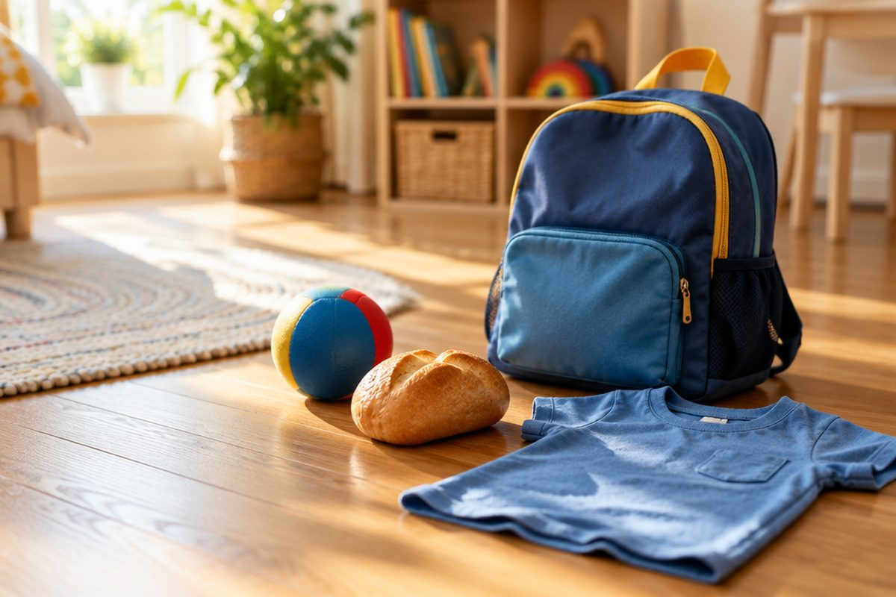

전체 단원 › 1학년 1학기 › 국어 › 2단계 · 받침 ㄹ ㅂ ㅅ ㅇ
옷은 왜 [옫]으로 소리 날까?

"달", "밥", "옷", "공"을 읽어 봐요. 지난번 ㄱ ㄴ ㅁ에 이어, 오늘은 받침 네 개를 더 배워요.
받침 ㄹ [을]
혀끝을 윗잇몸에 살짝 대고 끝내요.
"을~" 하고 소리가 이어져요.
달 · 물 · ⭐ 별 · 발 · 귤
받침 ㅂ [읍]
입술을 꼭 닫고 짧게 끊어요.
ㅁ 받침보다 짧고 단단해요.
밥 · 집 · 입 · 컵
받침 ㅅ은 [ㄷ] 소리
ㅅ이 받침이면 [ㄷ]처럼 소리 나요.
글자는 ㅅ으로 쓰고, 소리는 [ㄷ]이에요.
옷 [옫] · 붓 [붇] · 맛 [맏]
받침 ㅇ [응]
맨 앞의 ㅇ은 소리가 없었지요?
받침 ㅇ은 "응~" 하고 콧소리가 나요.
공 · 빵 · 가방 · 강
핵심 낱말
- 받침 ㄹ
- 혀끝을 윗잇몸에 대고 '을' 하고 끝나요. 달, 물.
- 받침 ㅂ
- 입술을 닫고 짧게 끊어요. 밥, 집.
- 받침 ㅅ
- 쓸 때는 ㅅ, 소리는 [ㄷ]이에요. 옷[옫].
- 받침 ㅇ
- '응' 하는 콧소리예요. 공, 빵.
꼭 알아야 할 표현
| 달 | 🌙 밤하늘의 달 | |
| 물 | 💧 마시는 물 | |
| 별 | ⭐ 밤하늘에 반짝이는 별 | |
| 밥 | 🍚 쌀로 지은 밥 | |
| 집 | 🏠 사는 곳 | |
| 컵 | 🥤 물을 담아 마시는 그릇 | |
| 옷 | 👕 몸에 입는 것 | [옫] |
| 맛 | 😋 혀로 느끼는 맛 | [맏] |
| 공 | ⚽ 차고 던지는 공 | |
| 빵 | 🍞 밀가루로 구운 음식 | |
| 가방 | 🎒 물건을 넣어 메는 것 | |
| 갈 갑 갓 강 | '가'에 받침 ㄹ ㅂ ㅅ ㅇ을 붙인 글자 | [갈 갑 갇 강] |
한 줄 정리
- 받침 ㄹ은 '을', ㅂ은 '읍', ㅇ은 '응' 소리로 끝나요.
- 받침 ㅅ은 [ㄷ]처럼 소리 나요. 옷 → [옫].
- 맨 앞의 ㅇ은 소리가 없고, 받침 ㅇ은 소리가 나요.
학교 교육과정 연결
- [2국04-01] 한글 자모의 이름과 소릿값을 알고 정확하게 발음하고 쓴다.
- [2국04-02] 소리와 표기가 다를 수 있음을 알고 단어를 바르게 읽고 쓴다.